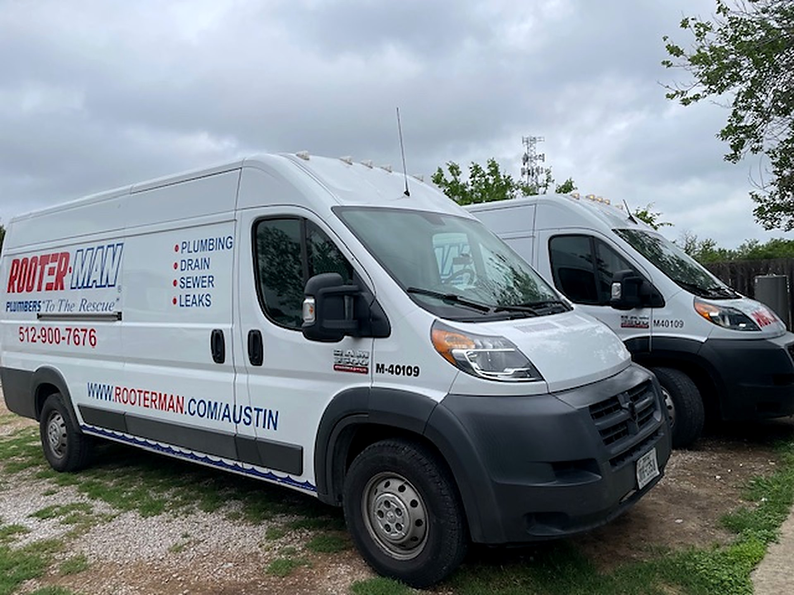
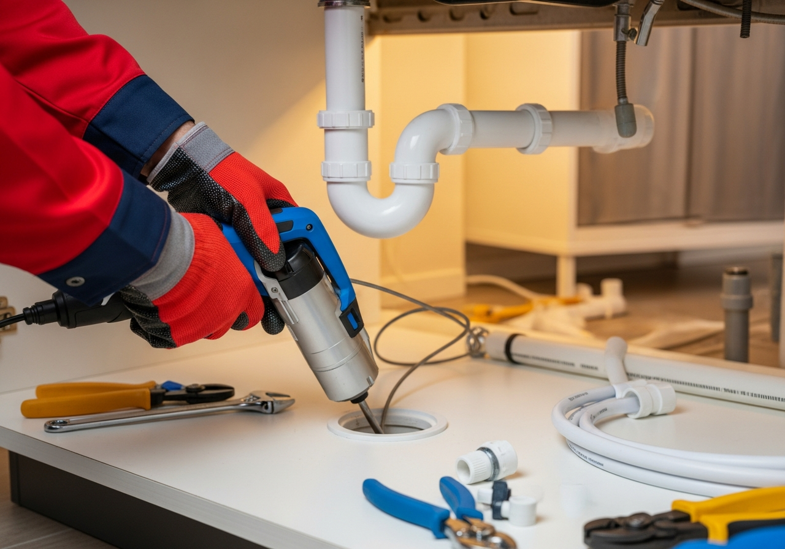
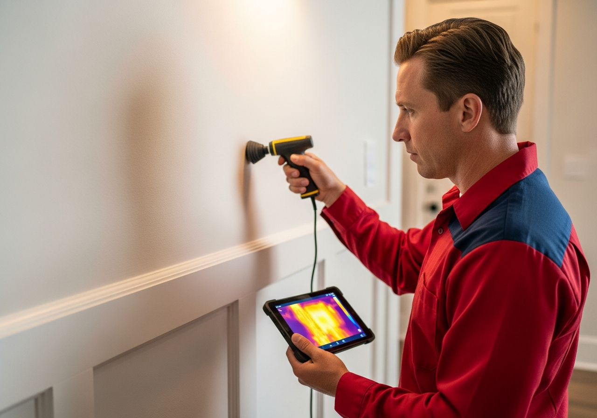
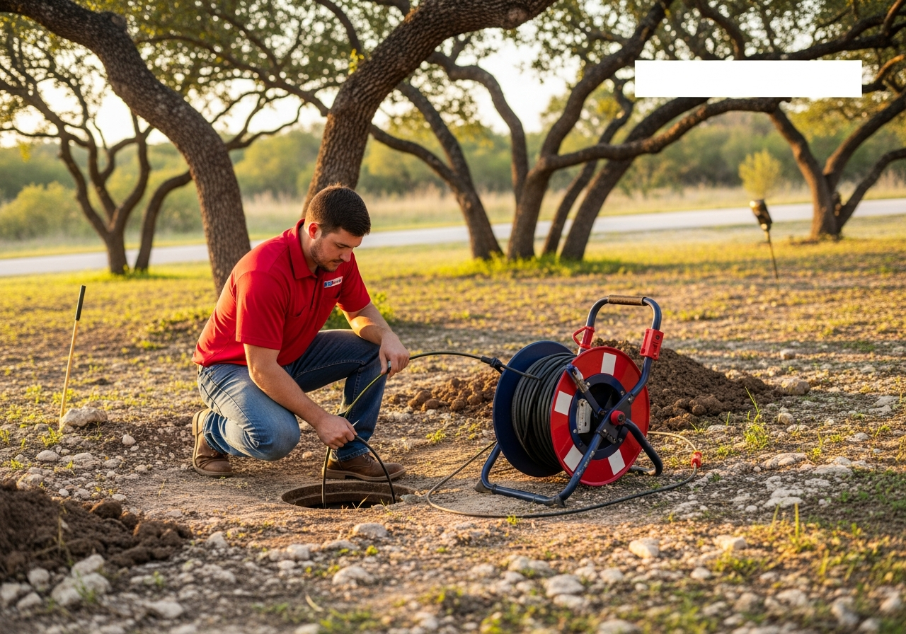
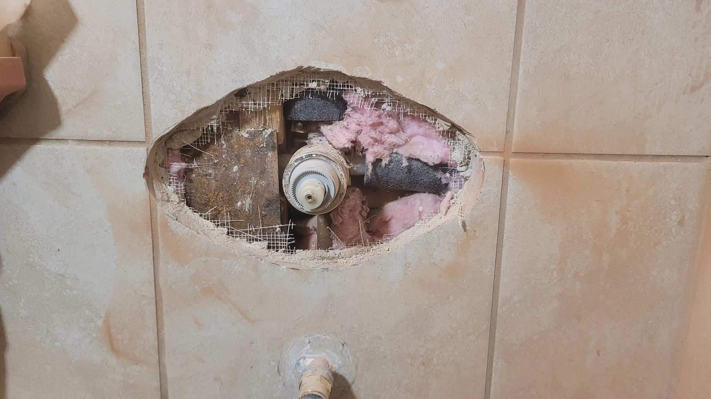
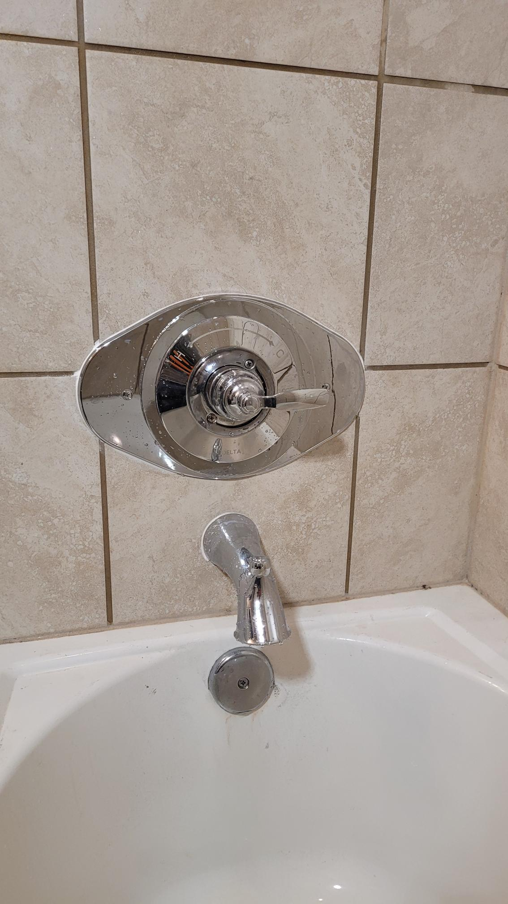
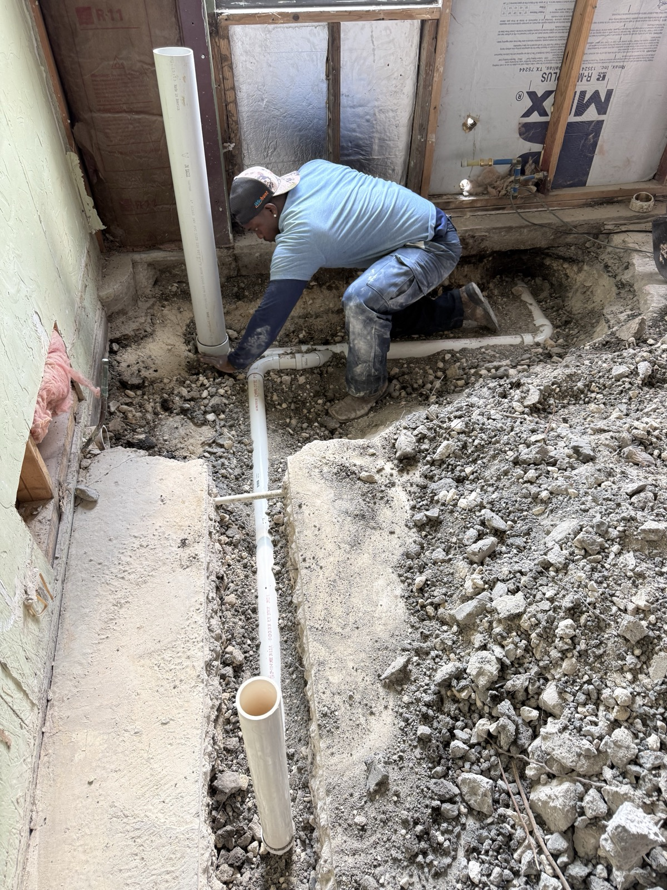
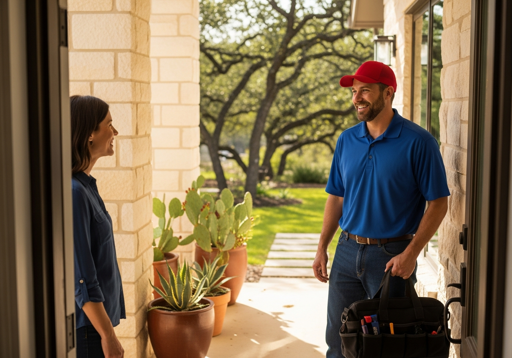

Homeowners and businesses across the Austin metro count on quick, honest, licensed service from Rooter-Man of Austin. Family-owned since 2012, upfront pricing, every job backed by our warranty.

Burst pipe, no hot water, or a drain backing up into the house? Call any time, day or night. A real person answers, books you immediately, and we dispatch a licensed plumber at the first available appointment, same-day whenever we can.
From a slow kitchen drain to a whole-home repipe, our licensed techs carry the parts and diagnostics to fix it right the first time.

Tank and tankless repair and install. Called Saturday, installed Sunday. Save $100 on install.

Clogs cleared at the root, not just punched through. Honest recommendations, no upsell pressure.

Slab, wall and yard leaks pinpointed with acoustic and thermal tools before we open anything up.

Camera inspection and trenchless repair that spares your yard, trees and slab.
Slow drains, gurgling sinks and backups cleared at the source with the right method.
High-pressure water scours grease, scale and roots out of the whole pipe wall.
Camera inspection, plain-language findings, a real fix, and warranty on the work.
Yard, slab, wall and fixture leaks found with non-invasive sensors and thermal imaging.
Failing galvanized or poly lines swapped for clean copper or PEX, done to code. Ask about financing.
Same-day pumping, inspection and straight guidance to keep your system healthy.
Main line diagnosis, spot repair and replacement, often in a single day. Built for Austin's clay soil.
Trenchless repair, tunneling and pump service that protects your yard and slab.
Weak or hammering pressure traced to the real cause, regulator, leak or buildup, and corrected.
Gas, electric and tankless repair and install. Honest repair-or-replace advice. $100 off install.
Most standard installs done in a few hours, backed by a strong labor warranty. Free phone estimates.
Jam, leak or hum? Honest repair-or-replace call, same-day or next-available, warranty-backed.
Not stock photos. This is Rooter-Man work in Austin homes: opened up honestly, fixed properly, finished clean.

Failing shower valve, opened clean
New pressure-balanced valve, finished
New drain lines under an Austin slab
Austin homes face problems most plumbers gloss over. We do not.
Austin's mineral-heavy water leaves stubborn scale inside pipes, fixtures and water heaters, choking flow and wearing systems out early. We clear it, flush it, and help you stay ahead of it.
Our soil swells and contracts with dry heat and sudden storms, stressing buried water and sewer lines and hiding slab leaks under concrete. We know the warning signs before they become a flood.
From Hyde Park to Travis Heights to the older streets off 183, mature trees send roots into aging sewer lines. Hydro jetting and trenchless repair fix it without tearing up your yard.
Slab foundations across Central Texas, plus the hilly Spicewood Springs terrain, call for precision tunneling and the right approach. We solve for your neighborhood, not a template.
Serving Austin, Cedar Park, Round Rock, Georgetown, Pflugerville, Leander, Lakeway, Hutto, Brushy Creek, Wells Branch and the surrounding Greater Austin area.
Our line is answered around the clock at (512) 645-1441. Tell us what is going on and we give you the next available options, often same-day.
A licensed plumber inspects the real problem and explains it plainly, English or Spanish. You see the price before any work begins. No surprises, no upsell pressure.
We do the work cleanly and to code, test it, and leave your space the way we found it. Every job is backed by our warranty.

Rooter-Man of Austin has served Greater Austin since 2012 as a locally and family-owned company. We treat your home like our own, explain the work in plain language, and stand behind every job.
"Efficient, professional, and friendly. Cleared our slow kitchen drain easily, with a transparent up-front estimate and no upsell pressure."
"Eddie arrived quickly. He is extremely knowledgeable, friendly, and the prices are awesome for the quality of repairs. I'm never using another plumber."
"Josh and his team did a great job replacing our water heater. We called on a Saturday, and by Sunday afternoon we had a new water heater installed. Thank you!"
"Eddie made time and came over the same day. He was thorough in diagnosing my water heater issue. If I ever have a plumbing issue, I'm definitely calling Rooter-Man."
"Highly recommend. Joshua explained everything very clearly and gave great advice. He updated our water heater so it was to code, and the work was great!"
"Eddie was honest and explained everything. I had a corroded shower faucet and he quickly diagnosed and replaced it. Money well spent to avoid a major pipe bust."

New to Rooter-Man of Austin? Save 10% on your first service.
Cannot be combined with any other coupon. Restrictions may apply. Valid Jan 1 through Dec 31, 2026. Call to Claim (512) 645-1441Replacing or installing a water heater? Take $100 off with Rooter-Man.
Cannot be combined with any other coupon. Restrictions may apply. Valid Jan 1 through Dec 31, 2026. Call to Claim (512) 645-1441A repipe, water heater, or sewer repair should not have to wait. We offer flexible financing to keep quality plumbing within reach. Ask about your options when you call.
Every job, large or small, is backed by our warranty and our commitment to do it right the first time. That is the peace of mind that comes with a licensed, family-owned Austin plumber.
Based in North Austin and rolling across the metro every day.
Yes. We strive for same-day scheduling on service calls whenever possible. Our phone line is answered 24/7, so call (512) 645-1441 any time and we will give you the next available options.
Our phone line is answered 24/7, so you can always reach a real person and get booked immediately, day or night. Our plumbers run during regular service hours, and we dispatch at the first available appointment, same-day whenever possible.
Yes. Rooter-Man of Austin is fully licensed, Texas plumbing license M40109, and we have served the Greater Austin area as a family-owned company since 2012.
It depends on the job, but we believe in transparent, upfront pricing. For many services we can give you a ballpark estimate over the phone, and you always see the price before any work begins. No upsell pressure.
Yes. We offer flexible financing options on larger projects like repipes, water heaters, and sewer work. Ask us about it when you call.
Generally, repair makes sense when the unit is under about 10 years old and only a few components are involved. Replacement is often smarter when it is over 10 years old, has needed multiple repairs, or efficiency has dropped. We give you an honest recommendation, not a sales pitch. New customers can also save $100 on water heater install.
Yes. We offer full bilingual service in English and Spanish. When you call, just let us know which you prefer and we will review the problem, pricing, and warranty in that language.
We serve Austin and the Greater Austin area, including Cedar Park, Round Rock, Georgetown, Pflugerville, Leander, Lakeway, Hutto, Brushy Creek, and Wells Branch. Not sure? Just call.
We generally advise against them. Chemical cleaners can damage certain pipes and usually do not remove the underlying cause, like grease buildup or roots. A professional evaluation is the safest path to a lasting fix.

Licensed, local, and family-owned since 2012. Same-day scheduling whenever possible, upfront pricing, and every job backed by our warranty. New customers save 10%, plus $100 off water heater installs through 2026.